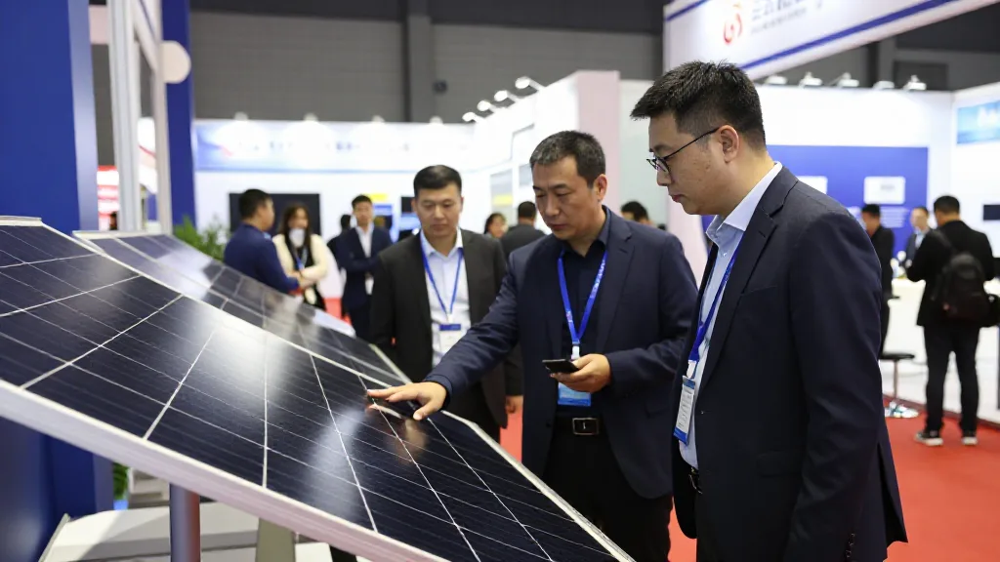
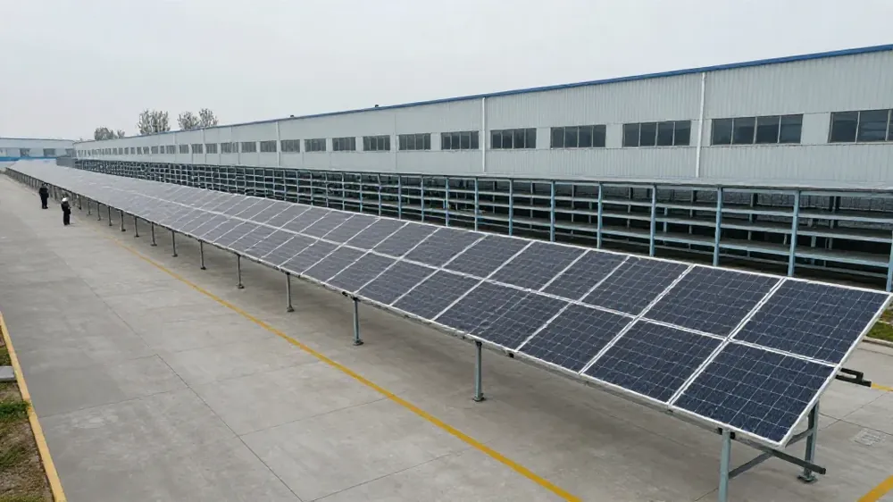
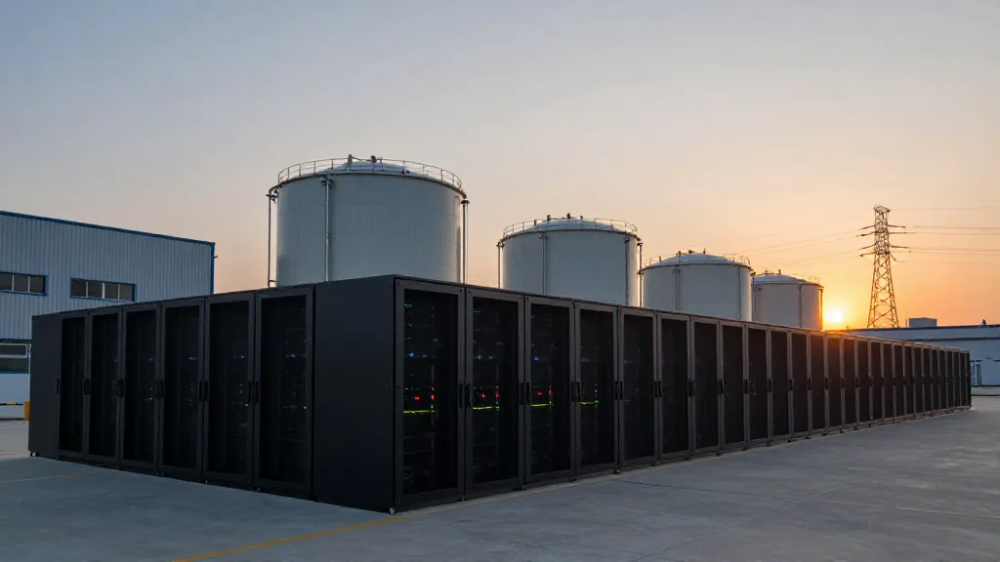
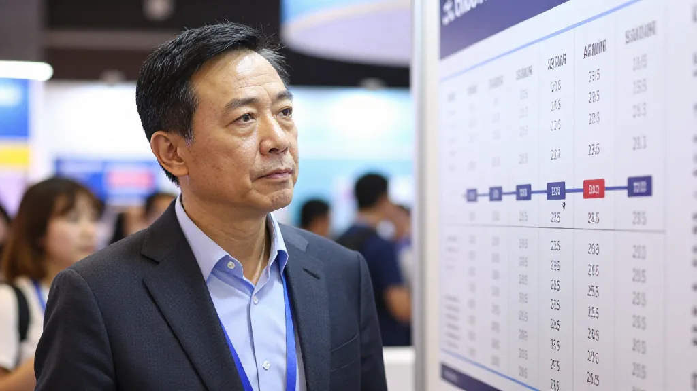

今日个朋友去咗第18届世界太阳能光伏暨储能产业博览会（PV Guangzhou 2026），返嚟话我：「展会好大，但感觉人好少。」
我即刻追问数据——答案好清晰：国内上半年装机86.2GW（同比-61%），主产业链连续11个季度亏损，板块净利润-104.76亿元，展会规模18万平、2000几展商，官方话首日13万人次。
官方数据加现场观感，两个信号都指向同一个结论：光伏行业，2026年进入深度调整期。

圖片由 AI輔助創作（Z-Image-Turbo）
一、朋友嘅「人少」其实系5个信号
信号1：人流减少
行业冷清嘅直接证据，国内市场萎缩，参展商质素参差。唔系错觉，系数据撑住嘅现实。
信号2：海外买家多
国内市场萎缩，参展商转向出口，重点对接国际买家，唔再吸国内散客。国内过剩，海外先系出路。
信号3：展位冷清
部分参展商预算紧，展位设计简化，销售人员减少。肯使钱嘅少咗，睇得出成行收紧水喉。

圖片由 AI輔助創作（Z-Image-Turbo）
信号4：行业共识改变
2026上半年净亏损104.76亿，连续11个季度亏损，「反内卷」政策推动出清。以前系拼规模，而家系拼边个活得落去。
信号5：2027年缺货高峰
内存涨价5到7倍，电力供应成瓶颈，储能加AI先系下一个风口。光伏落，储能起，呢个切换好关键。
二、对AI算力嘅连锁影响
光伏看似同AI算力无关，但其实三条线扣得好紧。第一，电力瓶颈：太阳能系AI数据中心电力来源之一，光伏萎缩，电力更紧张，算力电力成本继续升。第二，储能机会：光伏落、储能起，储能加AI数据中心系黄金组合。第三，出口转移：国内产能过剩，欧美同东南亚需求增长，跨境电商有机会。

圖片由 AI輔助創作（Z-Image-Turbo）
三、对鄭哥业务嘅具体影响
AI算力方面，电力成本上升推高服务器总成本5到10%，选址要转去电力充足地区，储能结合系机会。跨境电商方面，光伏产品出口、优质供应商集中，选品更清晰。年轻人投资方面，避开光伏制造端同落后产能，关注储能加AI、新技术同海外市场。

圖片由 AI輔助創作（Z-Image-Turbo）
四、70后嘅行业观察哲学
我哋呢代做贸易26年，见过太多周期：2003年SARS口罩短期暴涨长期过剩，2008年金融危机复苏慢淘汰快，2011年日本地震电子元件短期涨3倍，2020年疫情IC短缺涨5倍，2026年光伏加AI进入底部出清期。
每一次行业底部，都系重新分配嘅机会：优质企业活下来提升份额，新进入者搵到差异化，跨界融合创造新蓝海。
五、海哥嘅建议
对投资者：短期一年避开光伏制造端，中期三年睇储能加AI算力，长期五年以上睇新能源加新技术。对从业者：由光伏制造转向储能加AI，由低端转向高端加出口，同优质企业抱团。对朋友：展会观感加行业数据双重视角，短期唔好急住投资，中期睇储能，长期睇新技术。呢个时代，识得避开风险，比识得抓住机会更重要。
朋友嘅「人少」观感，唔系错觉，系行业嘅真实信号。光伏2026年进入深度调整期，但每一次调整都系重新分配嘅机会。储能加AI嘅交叉点，就系下一个10年最大机会。我哋呢代70后，由电子产品到AI算力，见证紧每一个转折。你呢，准备好未？
合作联系 WhatsApp: +852 6641 7912 · 七善門科技 · 星辰算力
本文参考：央广网9月17日报道、CFM闪存市场、国家「反内卷」政策、PV Guangzhou 2026展会数据。
A friend went to the 18th World Solar Photovoltaic and Energy Storage Industry Expo (PV Guangzhou 2026) today and came back saying: "It is a big show, but it felt empty."
I went straight to the numbers — and the answer is clear enough: domestic installations in the first half of the year were 86.2 GW (down 61% year on year), the main supply chain has lost money for 11 straight quarters, and the sector's net profit was -10.476 billion yuan. The show covers 180,000 square metres with over 2,000 exhibitors, and the organisers say 130,000 visitors came on day one.
The official data and what my friend saw on the floor point to the same conclusion: in 2026 the solar industry has entered a deep correction.
AI-assisted illustration (Z-Image-Turbo)
1. My friend's "empty" is really five signals
Signal 1: fewer people walking the floor
Direct evidence that the industry is quiet: the domestic market is shrinking and exhibitor quality is uneven. It is not an illusion — the data backs it up.
Signal 2: more overseas buyers
With the domestic market shrinking, exhibitors are turning to exports and focusing on international buyers instead of local walk-in traffic. There is too much capacity at home; overseas is the way out.
Signal 3: quiet booths
Some exhibitors are tight on budget, so the booth design is simpler and there are fewer sales staff. Fewer people are willing to spend, which tells you the whole trade is turning off the tap.
AI-assisted illustration (Z-Image-Turbo)
Signal 4: the industry consensus has changed
A net loss of 10.476 billion yuan in the first half of 2026, 11 quarters of losses in a row, and "anti-involution" policy pushing the shakeout. It used to be a race for scale; now it is a race to see who survives.
Signal 5: a shortage peak in 2027
Memory prices are up five to seven times, power supply is the bottleneck, and storage plus AI is the next wave. Solar falls, storage rises — that handover matters.
2. The knock-on effects for AI compute
Solar looks unrelated to AI compute, but the three lines are actually tied tight. First, the power bottleneck: solar is one of the power sources for AI data centres, so a shrinking solar sector means tighter power and rising compute power costs. Second, the storage opportunity: solar falls and storage rises, and storage plus AI data centres is a golden combination. Third, the export shift: domestic overcapacity against growing demand in Europe, America and Southeast Asia means an opening for cross-border e-commerce.
AI-assisted illustration (Z-Image-Turbo)
3. What it means for Hany's business specifically
On AI compute, rising power costs push total server cost up 5 to 10 per cent, so site selection has to move towards regions with plenty of power, and pairing with storage is an opportunity. On cross-border e-commerce, solar exports and good suppliers are concentrated, which makes product selection clearer. For young people investing, avoid solar manufacturing and obsolete capacity, and look at storage plus AI, new technology and overseas markets.
AI-assisted illustration (Z-Image-Turbo)
4. A 70s veteran's philosophy of watching an industry
Our generation has done 26 years in trade and seen plenty of cycles: masks spiking then glutting after SARS in 2003; the 2008 financial crisis, slow to recover and quick to shake out; Japanese electronic components tripling for a while after the 2011 earthquake; IC shortages pushing prices up five times in the 2020 pandemic; and now solar plus AI entering a bottoming-out and shakeout phase in 2026.
Every industry bottom is a redistribution of opportunity: good companies survive and take share, newcomers find a difference, and crossover businesses open new water.
5. Hany's advice
For investors: avoid solar manufacturing for the next year or so, look at storage plus AI compute over three years, and look at new energy plus new technology over five years and beyond. For people working in the trade: move from solar manufacturing to storage plus AI, from low end to high end plus export, and team up with good companies. For my friend: keep both the show-floor impression and the industry data in view, do not rush into investment short term, look at storage in the medium term, and look at new technology long term. In this era, knowing how to avoid risk matters more than knowing how to grab opportunity.
My friend's impression of an "empty" show is not an illusion; it is the real signal from the industry. Solar enters a deep correction in 2026, but every correction is a redistribution of opportunity. The crossing point of storage and AI is the biggest opportunity of the next ten years. Our generation has gone from electronics to AI compute and watched every turn. So — are you ready?
Business enquiries WhatsApp: +852 6641 7912 · Qishanmen Tech · Star Compute
Sources: CNR report of 17 September, CFM flash memory market, the national "anti-involution" policy, and PV Guangzhou 2026 show data.

關於作者About the Author
鄭哥博客点评：26年外贸老兵，横跨电子、家电、服装、珠宝、教育、AI算力。做过中学教师、翻译、外贸，现搞七善门科技同星辰算力。口头禅：「点解唔得？」Hany Blog Review: 26-year trade veteran across electronics, appliances, fashion, jewelry, education, and AI compute. Now running Qishanmen Tech and Star Compute. Catchphrase: "Why not?"